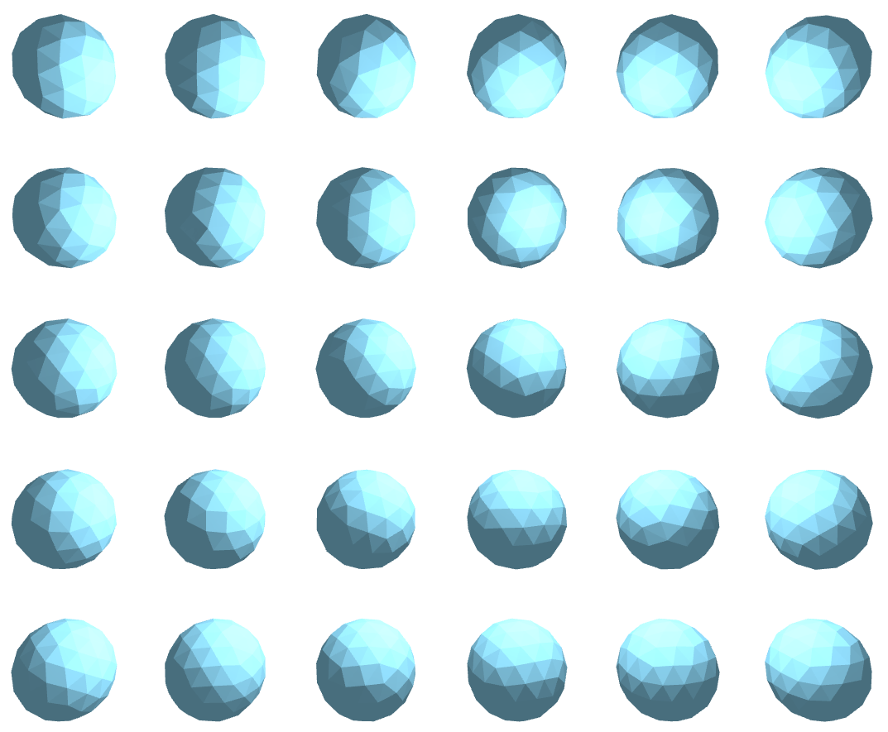

$$F=\frac{q_1 q_2}{4\pi \epsilon_0 {\left| \bf{r}_1-\bf{r}_2 \right|}^2}$$
計算を簡単にするために、\(q_n=1, 4\pi=1, \epsilon_0=1\)とする。\(\bf{r}_{12}=\bf{r}_1-\bf{r}_2\)とする。ベクトルでは、
$$\bf{F}=\frac{\hat{r}_{12}}{{
\left| \bf{r}_{12} \right|}^2}$$
i 番目の出電子が他の電子から受ける力の和は、
$$\bf{F_i}=\sum_{j=0}^{n\,j \neq i}\frac{\hat{r}_{i j}} {{
\left| \bf{r}_{i j} \right|}^2}$$
シミュレート条件
電子は球面上しか移動できない。
働く力は、クローン力のみ(古典電子)
シミュレート方法
最初の電子二つを、北極と南極の位置に配置する。
１ステップでの移動量は、前ステップまでの力と現時点でのクーロン力の和を元に計算する。
移動後には、球の外部に移動しているので、\( \bf{r} = 1 \)になるようにx,y,z成分を長さで割る
全電子の合計移動量が充分に小さくなれば、計算を終了。
電子を追加する場所は、球面上を1024 x 1024で分割スキャンして、近接電子から一番距離のある点に決定する。
電子間角度
一番近接した電子同士の距離角度を、角度 \( a \) とする。
各電子の中で、一番近い電子からの距離が最大の電子を最孤立電子とする。（イースター島のような電子）
最孤立電子と、それの再近接電子戸の距離角度を、角度 \( b \) とする。
\(a \approx b\)ならば、電子らの配置は、調和が取れた多面体であると推定できる。
上の図では、辺を表示する時に、角度 \(1.01a\)以下の辺は、緑色で表示、角度\(1.5a\)以下の辺は青色で表示している。
質問はtorui@nariuchi.comまで
参考文献電子の安定配置の３次元への拡張と最急降下法の考察
各電子を線で結び３角形を表示した結果図
電子４個から３４個まで
電子３５個から６４個まで
電子６５個から９４個まで

各電子で球に接する面を作成し、それらの面作成される多角形を表示した結果図
電子４個から３４個まで
電子３５個から６４個まで
電子６５個から９４個まで
Last updated 9/21/2017